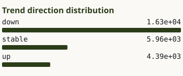
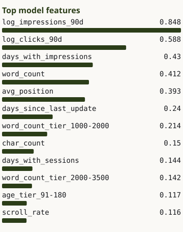

Three cases from one build.
All three come from the same decline-risk scoring model, built during the FlyRank internship on two slices: a bundled 30,000-row CSV and a March–April warehouse extract. Every number below is reproducible from the linked code.
01 · The leak that carried the result
Of the 30,000 rows in the bundled CSV, 3,388 (11.3%) had zero impressions in the prior 30 days, and every one of them was labelled not-declining — impressions cannot fall below zero. The model was scoring a population that contained thousands of rows whose answer was fixed by arithmetic before any feature was read.
Scoring only the 26,612 pages where decline was arithmetically possible, ROC AUC fell from 0.750 to 0.565 and Precision@50 from 0.740 to 0.600, against a base rate of 0.611. The model was doing a job I could have done with a filter. The hard question — which of the pages that could have gone either way actually declined — is the one it could not answer.

26,612 pages where decline was arithmetically possible — after the zero-impression filter. Bar labels are rounded to three significant figures by the chart script. Source: outputs/charts/trend_distribution.svg, recoloured, data unchanged.The number that didn't reproduce
I ran the filtered pipeline twice in separate directories and got identical numbers, so the pipeline is deterministic. That means the published 0.680 and the fresh-clone 0.740 cannot both come from this code on this data — the committed report was generated by an earlier state of the repo, or under different library versions. I have not confirmed which. The report was regenerated from a clean clone on 2026-08-09 and the 0.680 is withdrawn.
02 · Whole clients held out, and what that actually bought
On the March–April warehouse slice, I held out whole clients rather than random rows, so no client appears on both sides of the split — a model that memorises one client cannot score itself on that client's other pages.
I did not assume this was working; I measured it. The grouped split scored 0.901 against a random split's 0.908, so the method bought me 0.008 here. That is a small number, and reporting it small is the point: had the gap been large, it would have meant the random split was leaking badly. Either result is worth knowing, and you only know which one you have if you run both.
The split function is in the repo.
03 · What I refused to build on
In the March warehouse slice, only 413,966 of 9,841,378 daily rows had GA4 available — 4.2%. The rest were not empty; they were zero-filled, which would have dragged any engagement average toward zero without anything looking wrong on the surface.
So I carry ga4_usable as a 0/1 flag alongside the GA4 features, and the model gets told which is which. At item grain the features are 59% missing, and they are missing because a client had no GA4 that month, not because a page had no engagement. That distinction decides whether a GA4 feature measures behaviour or just identifies a client.

90d aggregates — the same window flagged in failure mode 3. Source: outputs/charts/top_feature_importance.svg, recoloured, data unchanged.Seven things I know are wrong with this model, or with how I reported it, are written up on the failure modes page.